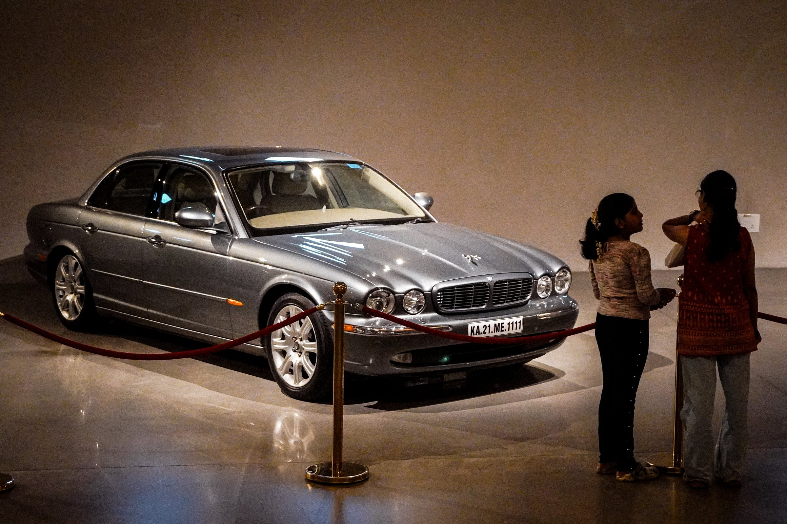
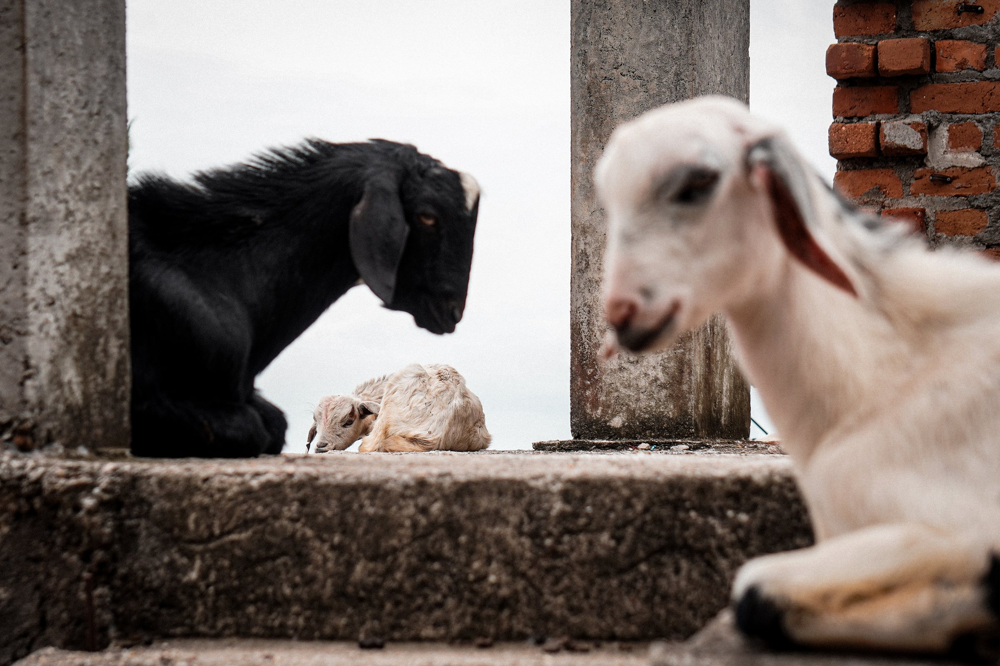
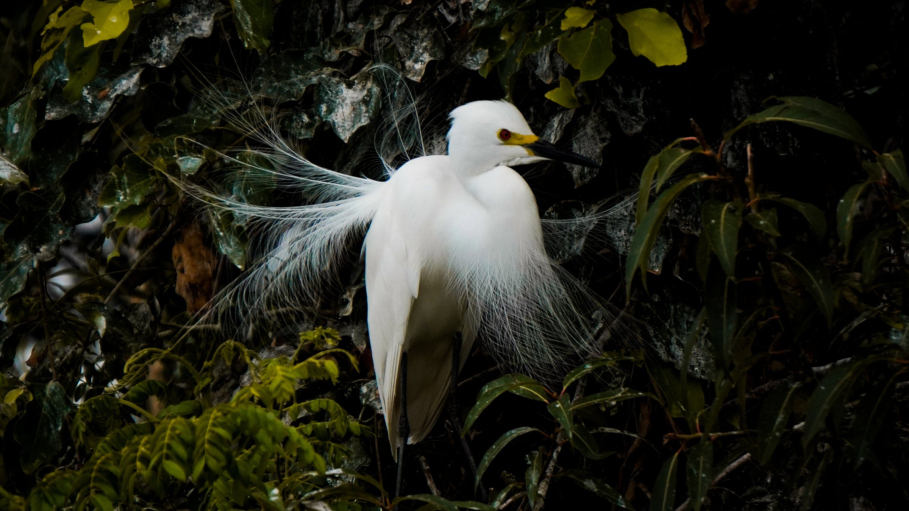

Shaurya SK
Picked up a camera when I got my glasses — I still use one because I still need the assistance.
2026
Projects
Selected bodies of work
Ongoing and completed projects, each shot and sequenced as a single story rather than a loose set of pictures.
![[Describe The Protest cover photograph]](assets/img/placeholders/the-protest-cover.svg)
![[Describe the Mysore Diaries cover photograph]](assets/img/placeholders/mysore-diaries-cover.svg)
Featured work
A curated edit
![[Describe this photograph]](assets/img/placeholders/landscape-01.svg)
![[Describe this photograph]](assets/img/placeholders/portrait-01.svg)
![[Describe this photograph]](assets/img/placeholders/street-01.svg)
![[Describe this photograph]](assets/img/placeholders/sports-01.svg)
![[Describe this photograph]](assets/img/placeholders/architecture-01.svg)
![[Describe this photograph]](assets/img/placeholders/documentary-01.svg)
![[Describe this photograph]](assets/img/placeholders/events-01.svg)
Genres